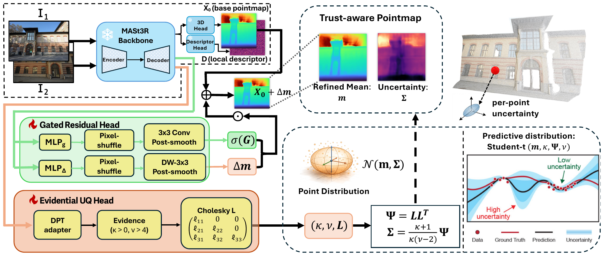
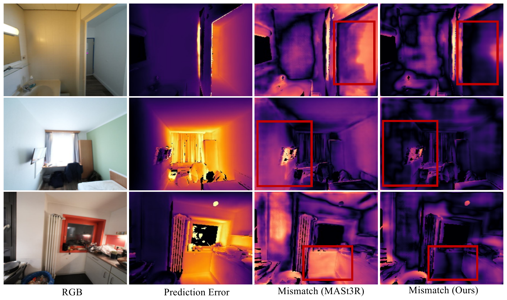
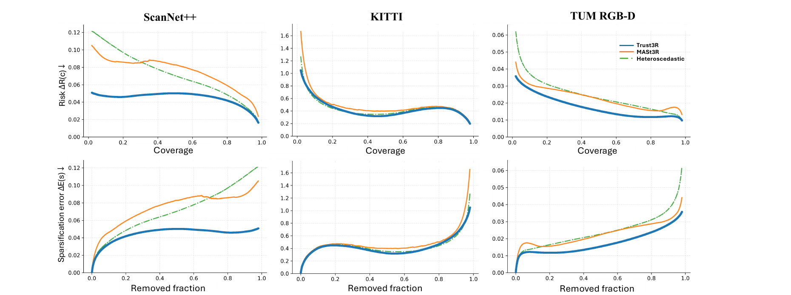
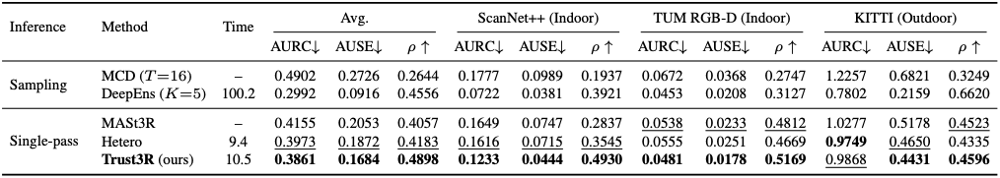

Geometric foundation models such as DUSt3R and MASt3R now predict dense pointmaps from uncalibrated images in a single forward pass. Yet the per-pixel confidence they emit is heuristic: it lacks a probabilistic interpretation and often fails to indicate where and how much the predicted geometry can be trusted — leaving downstream alignment, fusion, and SLAM modules with no calibrated signal to lean on.
We present Trust3R, a trust-aware 3D reconstruction framework that pairs a lightweight gated residual mean refinement with evidential learning to predict pointmap evidence under a Normal‑Inverse‑Wishart (NIW) prior. Marginalizing yields a closed-form multivariate Student‑t predictive distribution, giving probabilistically grounded pointmap uncertainty with moderate inference overhead — no sampling, no ensembles.
On diverse indoor and outdoor benchmarks (ScanNet++, TUM‑RGBD, KITTI, ETH3D), Trust3R consistently improves risk‑coverage and sparsification, while generally improving geometric accuracy. The design is backbone-agnostic: attached to a frozen VGGT model, the same evidential head lifts Spearman ρ from 0.32 → 0.64 and halves NLL.

Trust3R turns a feed-forward 3D reconstructor into a model that not only predicts geometry, but also tells us where that geometry can be trusted. Starting from a frozen MASt3R backbone, Trust3R adds two lightweight heads. The evidential uncertainty head predicts a compact distribution for every 3D point, producing a dense uncertainty map in a single forward pass — without ensembles or Monte Carlo sampling. The gated residual head makes small, selective corrections to the predicted pointmap, while preserving the strong geometry already learned by the pretrained backbone.

Mismatch maps. Each row shows, left to right: the input RGB, the oracle 3D‑error map, the mismatch between MASt3R’s confidence ranking and the oracle error ranking, and the mismatch under Trust3R’s evidential uncertainty. Darker pixels indicate better agreement between where the model says it is uncertain and where it is actually wrong, so a uniformly darker right column means Trust3R’s uncertainty tracks true reconstruction error far more faithfully than MASt3R’s heuristic confidence.

Uncertainty ranking quality on three test sets. Top row shows the Risk–Coverage gap ΔR(c) = Runc(c) − Roracle(c), where Roracle is obtained by sorting pixels by their true 3D error for the same method (method-specific oracle). Bottom row shows the sparsification error ΔE(s) = Eunc(s) − Eoracle(s). Lower is better; Δ = 0 indicates perfect (oracle) ranking. Each subplot uses its own y-axis range for readability.

@inproceedings{zhu2026trust3r,
title = {Trust It or Not: Evidential Uncertainty for
Feed-Forward {3D} Reconstruction with Trust3{R}},
author = {Zhu, Zihao and Zhao, Wenyuan and Chen, Nuo and
Tian, Chao and Fan, Zhiwen},
booktitle = {Proceedings of the 43rd International Conference
on Machine Learning (ICML)},
series = {Proceedings of Machine Learning Research},
volume = {306},
year = {2026},
publisher = {PMLR},
}